glaucoma glaucoma glaucoma
녹내장이란?
시신경이 손상되면 시야가 점차 좁아질 수 있고,
진행이 심한 경우 시력에도 영향을 줄 수 있습니다.
녹내장은 황반변성, 당뇨망막병증과 함께
3대 실명 질환으로 꼽힙니다.
초기에는 통증 없이 시야가 조금씩 좁아지다
서서히
실명에 이를 수도 있는 눈 질환입니다.
정상안
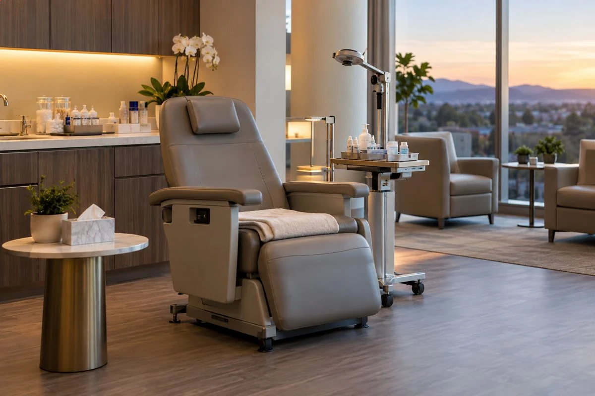
녹내장안
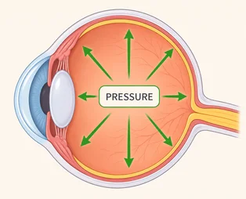
높아진 안압이망막의 시신경 및
시신경유두에
손상을 줍니다. 안구방수
유출구가 막혀서
안압이 증가합니다.
glaucoma glaucoma glaucoma
녹내장의
시야 손상 진행과정
-
01
정상
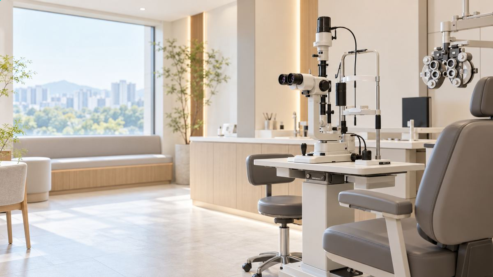
시신경유두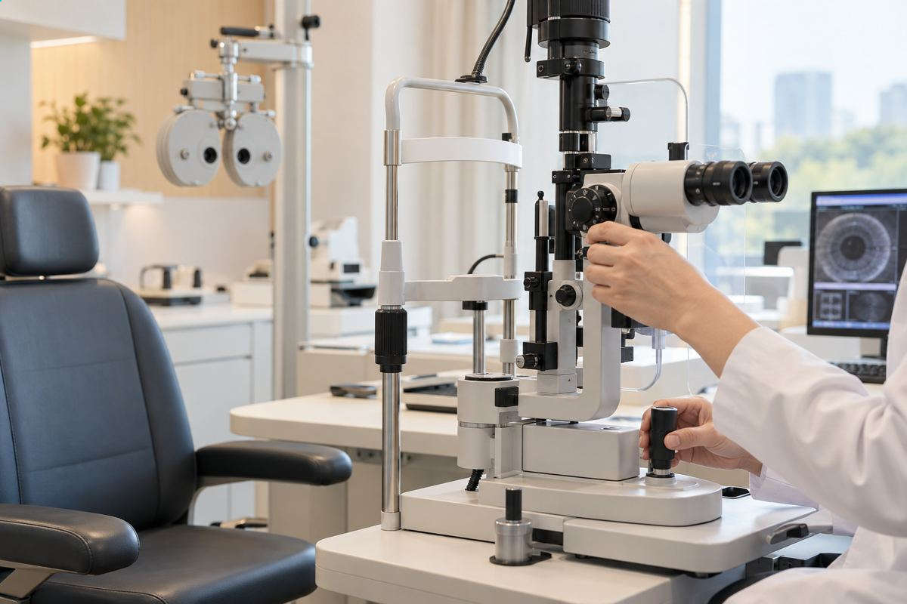
실제 시야 -
02
초기 녹내장
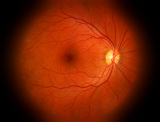
시신경유두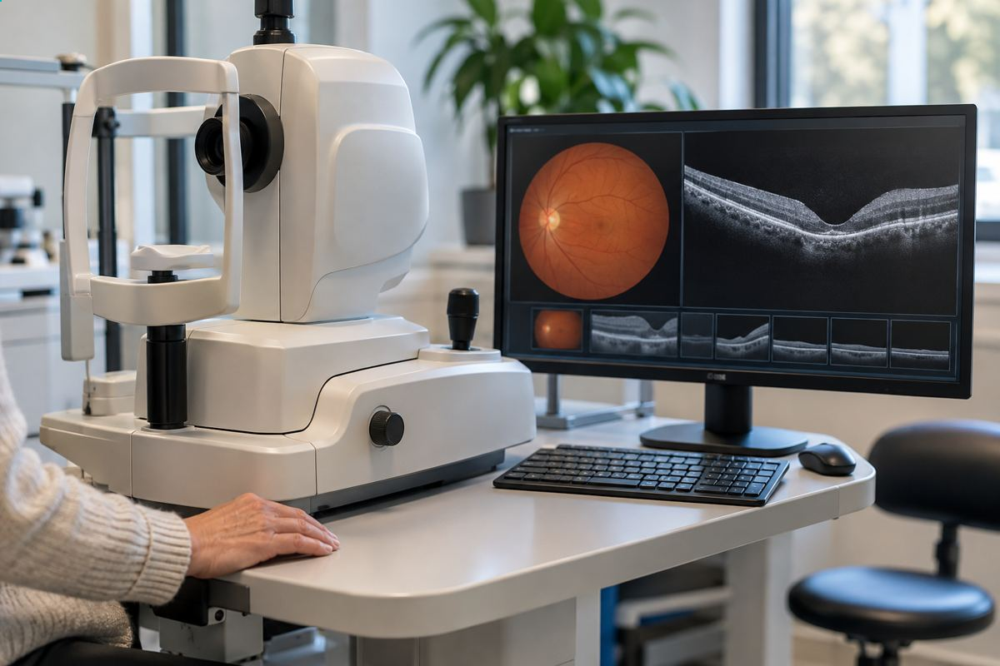
실제 시야 -
03
중기녹내장
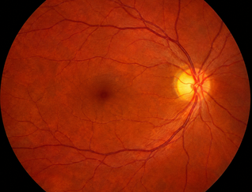
시신경유두실제 시야 -
04
말기 녹내장
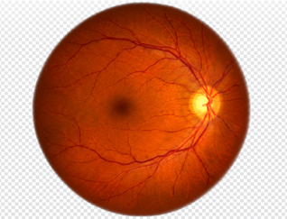
시신경유두실제 시야
녹내장의
종류와 원인
-
01
원발 녹내장
안압상승 및 혈류장애로
인한 시신경 손상 -
02
속발 녹내장
눈의 외상 염증 당뇨 등에 의한
신생혈관이나 오래된 백내장 등의
원인으로 발생한 녹내장 -
03
선천성 녹내장
태아시기에 방수 유출로가 제대로
만들어지지 않는 등 유전적 요인으로
발생한 녹내장
증상
-
01
초점을 맞추기 어렵다.
-
02
시야에 안보이는 부분이
생긴다. -
03
아침, 저녁 혹은 운동 중
두통이생긴다. -
04
시야가 뿌옇게변하며
눈에 통증이 생긴다. -
05
중심 시야보다
외곽 시야가 어둡다.
녹내장 고위험군high-risk group
녹내장 치료
녹내장은 일찍 발견하는 것이 가장 중요합니다.
안압 관련 질환은 점안약과 레이저, 수술을 상황에 맞게 선택합니다. 일상에서 관리할 부분도 함께 살피며
약이나 레이저, 수술은 눈 안의 압력을 낮추는 데 주된 목적을 둡니다. 상태에 따라 방법을 조합합니다.
-
약물 치료
- 눈에 직접 약물 투약 또는 안혈류
증가시키는 방법 - 개인별 증상과 진행 정도에 따라
두가지 이상의 약물 병행요법 -
약물 효과 및 부작용 또는 시야손상
진행 정도에 따라 약을 바꾸거나 먹는 약,
레이저, 수술 등의 치료로 전환 - 가장 우선적으로 선택되는 치료법
- 눈에 직접 약물 투약 또는 안혈류
-
레이저 치료
-
레이저를 이용해 안구 내 방수
배출로의 기능을 정상화시켜 안압을
떨어뜨리는 방법 -
폐쇄각 녹내장에 사용하는 '레이저
홍채절제술'과 개방각 녹내장에
사용하는 'STL레이저섬유주성형술'
-
레이저를 이용해 안구 내 방수
-
수술 치료
- 약물이나 레이저 치료가 효과가 없는
경우 고려하는 치료 방법 -
눈 속의 방수가 안구 바깥으로
적절하게 빠져나갈 수 있도록 배출
통로를 만들어주는 수술 진행
- 약물이나 레이저 치료가 효과가 없는
의료장비
OPTOS
한 번의 촬영으로 망막의 80%(200도)를 검사할 수 있고
동공을 넓히지 않고 검사해 라식 · 라섹 같은 굴절수술 전
망막 상태를 빠르고 정확하게 살피는
망막 진단 장비입니다.
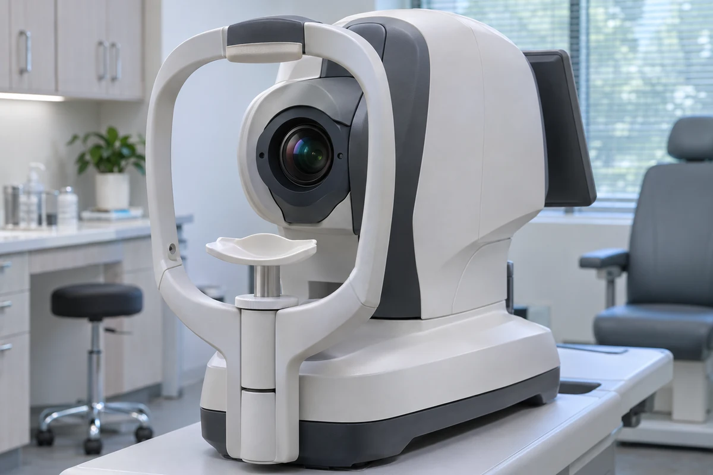
OPTOSVF
시야검사는 눈 질환이나 중추신경계 질환을 가려내고 경과를 보는 데
유용하며, 특히 망막 부위별 시야 상태를 검사하고 녹내장처럼
시기능 손상이 함께 오는 질환을 진단하고 지켜보는 데 필요합니다.
빛에 대한 눈의 반응을 확인해 녹내장이나 망막 이상 여부를
검사하고 진단에 참고합니다.
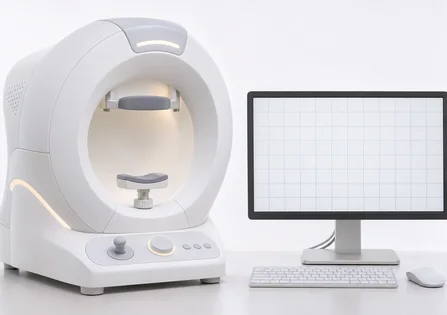
VFOCT
OCT 검사는 눈 조직의 단층 영상과 단면을 CT나 MRI보다
기존보다 훨씬 높은 해상도로 눈 속을 검사하는 장비입니다.
망막과 맥락막 질환은 정밀 검사로 확인할 수 있습니다.
시신경 섬유층의 상태를 살펴 초기 약화나
손상 여부를 확인하는 장비입니다.
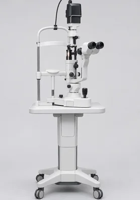
OCTIOP
눈 표면에 직접 닿지 않고 안압을 잴 수 있는 기기로
실명의 큰 원인인 녹내장 같은 여러 눈 질환으로
높아진 안압을 재어 진단하는 장비입니다.
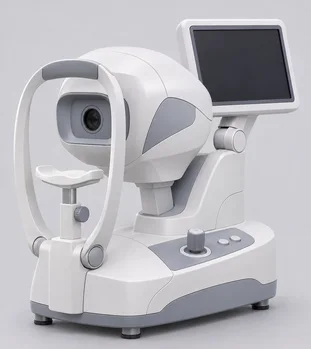
IOP